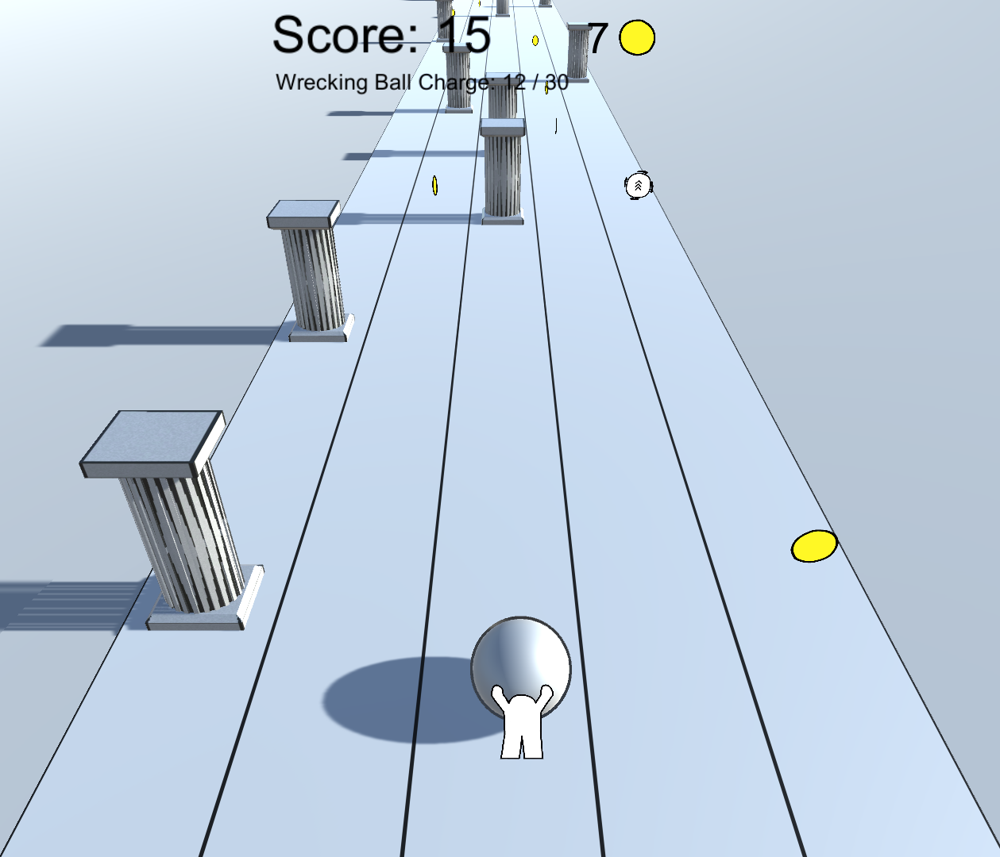
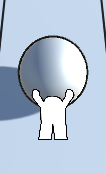
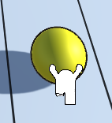
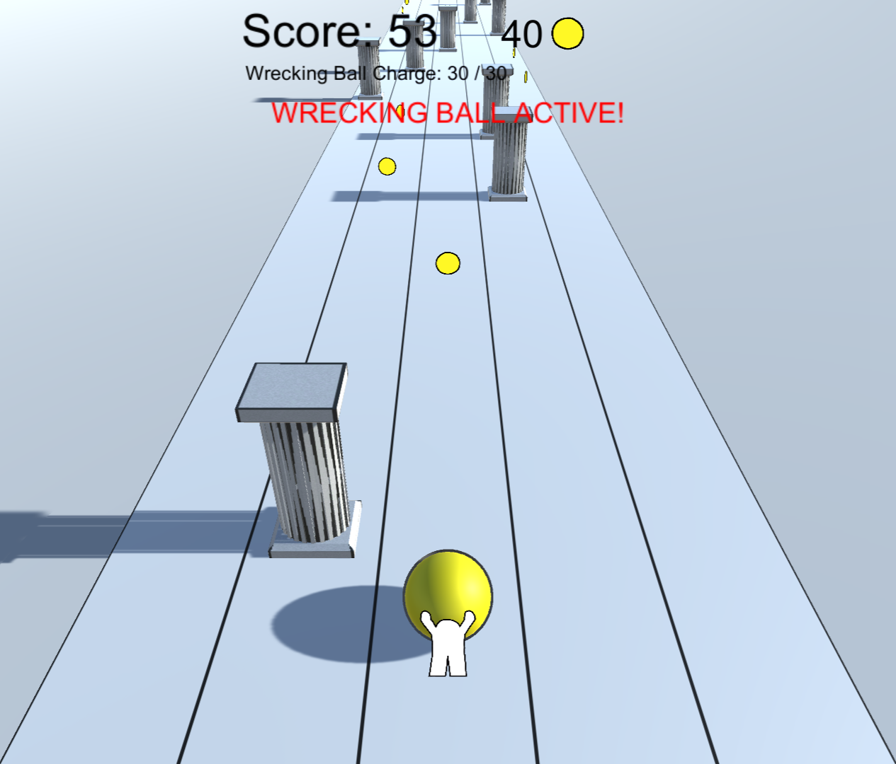
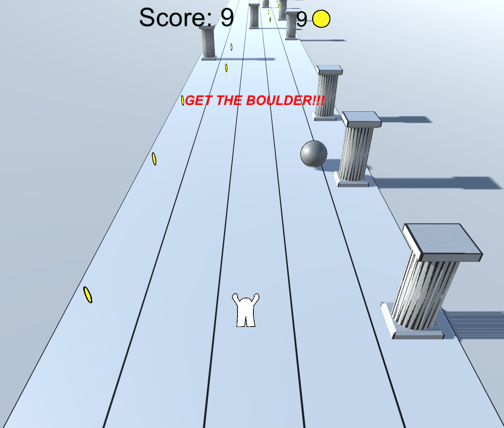
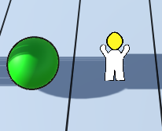
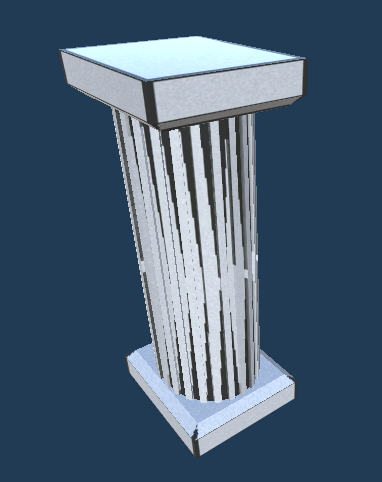

That Damned Boulder is an infinite runner game made in Unreal Engine.
It was a group project completed by a team of four.
The player takes on the roll of Sisyphus from Greek Mythology and attempts to roll a boulder as far up a hill as possible.
Along the way, the player can collect coins and power-ups, or smash into a pillar and drop the boulder.
After the player hits a pillar, they enter a chase sequence to catch the boulder.
During this time, their score decreases and hitting another pillar ends the game.
While the player has the boulder, running in a straight line builds charge for a "Wrecking Ball" state that allows the player
to smash one pillar without penalty.
Coins can be spent between runs on a score multiplier and a shorted Wrecking Ball charge period.
My main responsibilities included onboarding, implementing dynamic speed increases, the wrecking ball mechanic,
and the small number of 3D models in the game.

The boulder in its normal state.

The Boulder in its "Wrecking Ball" mode.

The game while the Boulder is in "Wrecking Ball" mode.

The game during the downhill chase sequence.

The part of the chase sequence where the boulder is catchable.

The Pillar model in Unity.